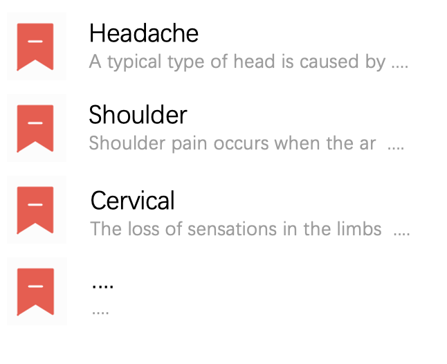
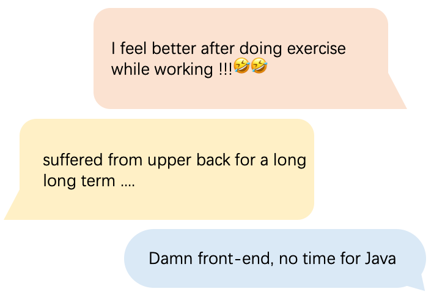
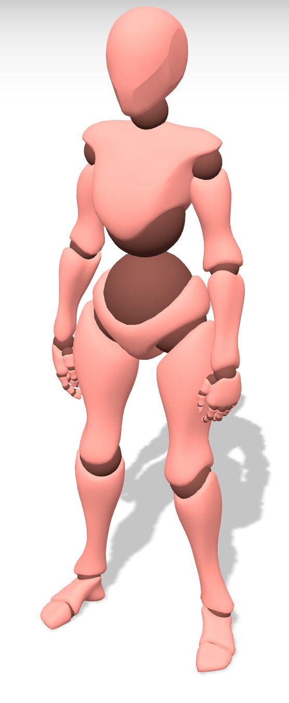
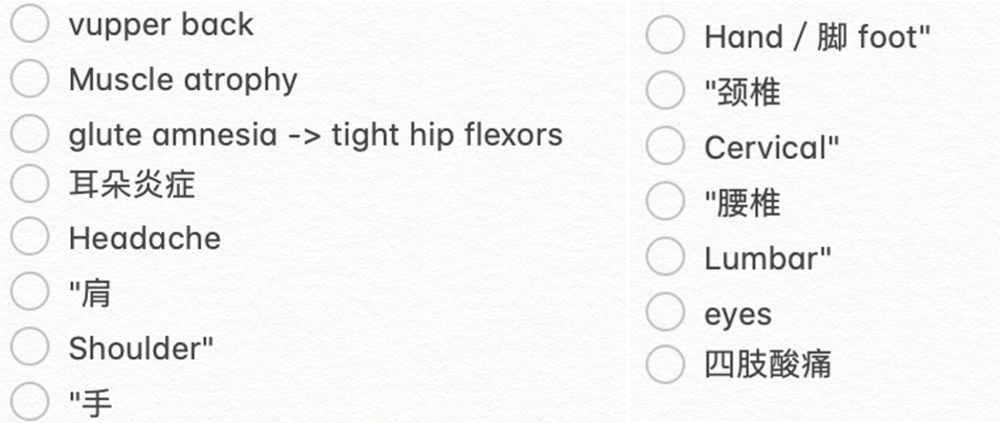
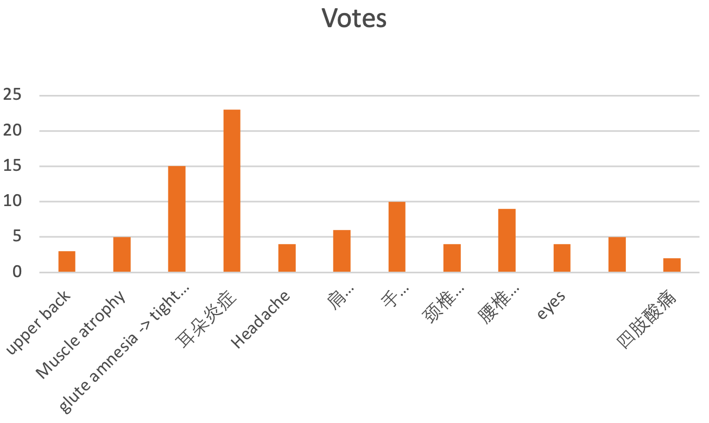

// bookmark area

// comments area

Finding your hurts
Click on some places you feel uncomfortable and find sth. useful
// after click, prompt
Symptoms:
#$%^#$%
Causes:
#$%^#$%
Treatments:
#$%^#$%
// maybe quiz ?
// votes and charts area

Results:
Our GitHub page.
All the fonts, colors, pictures are temporary !! Dont worry though it's ugly
border would be deleted after design, just for visibility now.